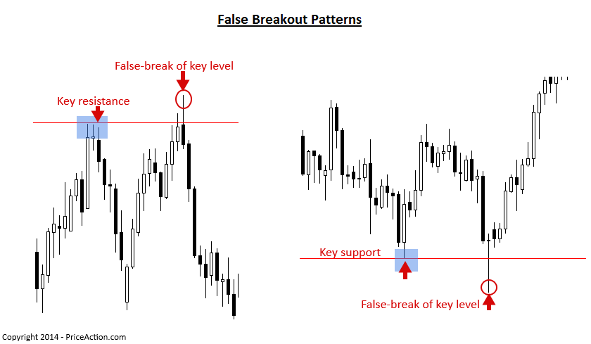
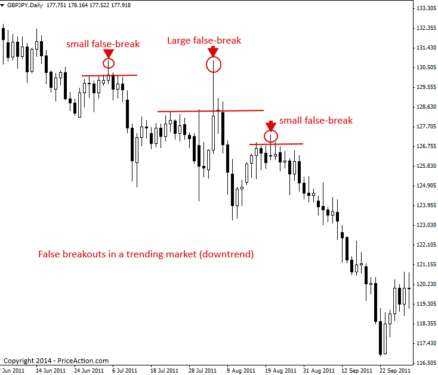
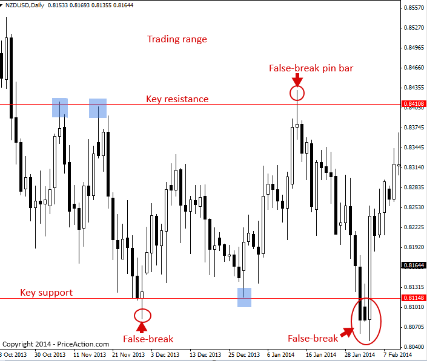
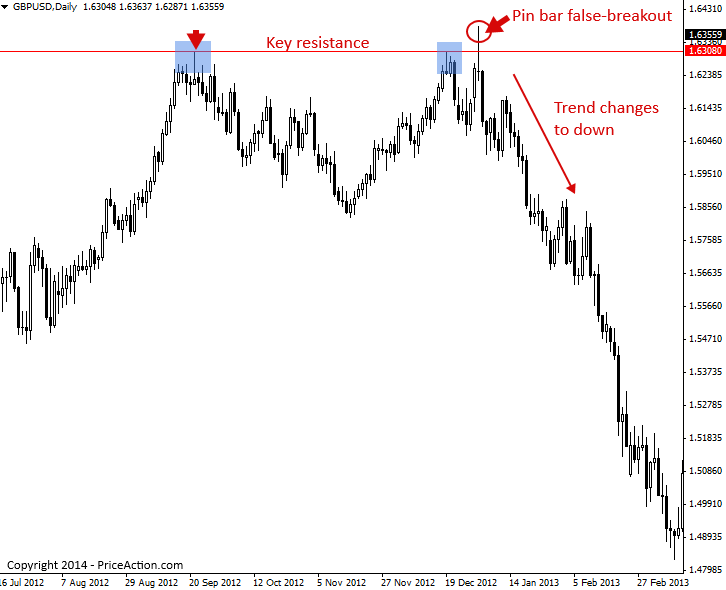

False Breakout Trading Strategy
거짓 브레이크아웃 패턴
거짓 브레이크아웃은 말 그대로 특정 레벨 위로 돌파가 이어지지 않아 해당 레벨에서 '거짓' 돌파가 발생하는 것을 말합니다. 거짓 브레이크아웃 패턴은 Price Action 거래 패턴 에서 가장 중요한 요소 중 하나입니다. 거짓 브레이크아웃은 가격 방향이 바뀌거나 추세가 곧 재개될 수 있다는 강력한 단서가 될 수 있기 때문입니다. 거짓 브레이크아웃은 시장의 '기만'으로 볼 수 있습니다. 가격이 돌파할 것처럼 보이지만, 곧 반전하여 돌파의 '미끼'에 속아 넘어간 모든 사람을 속이기 때문입니다. 아마추어들이 '명백한' 돌파처럼 보이는 지점에 진입하고, 프로들이 시장을 반대로 밀어내는 경우가 많습니다.
Price Action을 이용하는 트레이더라면 거짓 돌파에 속기보다는 이를 이용해 이익을 얻는 방법을 배우고 싶어할 것입니다.
다음은 주요 레벨 위아래로 거짓 브레이크아웃이 발생한 두 가지 명확한 사례입니다. 거짓 브레이크아웃은 다양한 형태로 나타날 수 있습니다. 때로는 거짓 브레이크아웃이 핀 바 패턴 이나 가짜 패턴 으로 발생하기도 하고, 그렇지 않은 경우도 있습니다.

거짓 돌파는 본질적으로 시장에서 논리와 미래적 사고보다는 감정에 따라 진입한 트레이더를 '제거'하는 '반대' 움직임입니다.
일반적으로, 잘못된 돌파(false break)는 아마추어 트레이더나 시장에서 '약한 손'을 가진 트레이더들이 '안전하다고' 판단될 때만 시장에 진입하는 경향이 있기 때문에 발생합니다. 즉, 이들은 시장이 이미 한 방향으로 상당히 확장되어 있고 (그리고 곧 되돌림을 앞두고 있을 때) 진입하거나, 주요 지지선이나 저항선 에서의 돌파를 너무 일찍 '예측'하려고 하는 경향이 있습니다. 전문 트레이더들은 아마추어 트레이더들의 이러한 실수를 예의주시하며, 결과적으로 좁은 손절매와 높은 위험 대비 수익률 잠재력을 갖춘 매우 좋은 진입 기회를 얻게 됩니다.
언제 잘못된 브레이크가 발생할지 예측하려면 규율과 약간의 '직감'이 필요하며, 잘못된 브레이크가 형성되기 전까지는 '확실히' 알 수 없습니다. 중요한 것은 잘못된 브레이크가 어떤 모습인지, 그리고 어떻게 거래해야 하는지 아는 것입니다. 이에 대해서는 다음에 자세히 다루겠습니다.
거짓 브레이크아웃 패턴을 거래하는 방법
거짓 추세는 모든 시장 상황에서 발생합니다. 추세, 통합, 역추세 등에서 발생할 수 있지만, 아마도 거짓 추세를 거래하는 가장 좋은 방법은 아래 차트에서 볼 수 있듯이 지배적인 일간 차트 추세에 맞춰 거래하는 것입니다.
아래 차트에서 분명한 하락 추세가 나타났고, 그 추세 내에서 상승으로 향하는 여러 차례의 거짓 돌파가 있었음을 알 수 있습니다. 이처럼 지배적인 추세에 반하는 거짓 돌파가 나타나면, 일반적으로 추세가 재개될 준비가 되었다는 매우 좋은 신호입니다. 아마추어 트레이더들은 하락 추세에서 바닥을, 상승 추세에서 천장을 잡으려고 애쓰는데, 이는 아래에서 볼 수 있듯이 추세에 반하는 거짓 돌파를 유발할 수 있습니다. 아래 차트에서 이러한 거짓 돌파가 발생할 때마다 아마추어 트레이더들은 하락 추세가 끝났다고 판단하고 매수를 시작했을 가능성이 높습니다. 이러한 매수가 시작되자 전문 트레이더들이 다시 진입하여 하락 추세 시장의 일시적인 강세를 이용하여 가치주 매도 포지션에 진입했습니다. 그러자 하락 추세가 재개되면서 바닥을 잡으려고 했던 모든 아마추어 트레이더들이 사라졌습니다.
아래 차트는 하락 추세 시장 내에서 발생한 허위 돌파 사례들을 보여줍니다. 각 돌파 사례가 추세 재개로 이어졌다는 점에 유의하세요.

거래 범위 내에서는 잘못된 돌파(false break)가 빈번하게 발생합니다. 트레이더들이 종종 범위 돌파 시점을 포착하려고 하지만, 가격은 대부분의 사람들이 생각하는 것보다 오랫동안 범위 내에서 움직이기 때문입니다. 시장이 거래 범위 내에서 움직일 때 잘못된 돌파가 다소 흔하다는 사실을 아는 것은 Price Action 트레이더에게 매우 귀중한 정보입니다.
범위 내 시장에서 거래하는 것은 매우 수익성이 높을 수 있는데, 범위의 지지 또는 저항 경계에서 Price Action 신호를 기다려 범위의 반대쪽으로 거래할 수 있기 때문입니다.
거래 범위 밖에서 거짓 돌파에 빠지지 않는 가장 좋은 방법은 가격이 범위 밖에서 마감될 때까지 이틀 이상 기다리는 것입니다. 만약 그렇게 된다면, 해당 범위가 종료되고 가격이 다시 추세를 형성할 가능성이 높습니다.
아래 차트에서 Price Action 트레이더가 거짓 브레이크 아웃 핀바 신호를 이용하여 거래 범위의 거짓 브레이크아웃을 거래하는 방법을 확인할 수 있습니다. 거래 범위 내 주요 저항선에서 거짓 브레이크 핀바가 나타나고, 거래 범위 내 지지선에서 두 번의 거짓 브레이크가 나타나는 것을 확인할 수 있습니다. 경험이 풍부한 트레이더는 핀바와 같은 Price Action 트리거가 없는 거짓 브레이크아웃을 거래할 수도 있습니다. 아래 차트에서 두 번의 거짓 지지선 브레이크는 모두 노련한 Price Action 트레이더에게는 잠재적인 매수 신호였습니다.

거짓 돌파 패턴은 때때로 새로운 추세의 시작과 현재 추세의 끝을 알리는 신호가 될 수 있습니다.
아래 차트 예시에서 우리는 두 번의 테스트에서 가격을 유지한 주요 저항 수준을 볼 수 있고, 세 번째 테스트에서 가격이 잠재적인 하락 움직임이 다가오고 있음을 알리는 큰 거짓 브레이크 핀 바 전략을 만들어냈습니다.
이 차트에서 볼 수 있듯이, 거짓 돌파는 하락세를 예고하는 신호일 뿐만 아니라, 전체 하락 추세의 시작이었습니다.

거짓 브레이크아웃 패턴 거래 팁
- 거짓 돌파는 추세 시장, 박스권 시장, 그리고 추세에 반하는 시장에서 발생합니다. 모든 시장 상황에서 거짓 돌파를 주의 깊게 살펴보세요. 거짓 돌파는 임박한 시장 방향에 대한 강력한 단서를 제공하기 때문입니다.
- 반대 추세에 맞춰 거래하는 것은 어렵지만, 추세에 반하는 거래를 하는 '최고' 방법 중 하나는 위의 마지막 예에서 보여준 것처럼 주요 지지 또는 저항 수준에서 추세에 반하는 명확한 거짓 돌파 신호를 기다리는 것입니다.
- 거짓 브레이크아웃 패턴은 아마추어와 프로 트레이더 사이의 '경쟁'을 엿볼 수 있는 '창'을 제공하며, 따라서 전문가와 거래할 수 있는 방법을 제시합니다. 거짓 브레이크아웃 패턴을 식별하고 거래하는 방법을 배우면 거래가 완전히 다른 시각으로 진행될 것입니다.
https://priceaction.com/price-action-university/strategies/false-break-out/